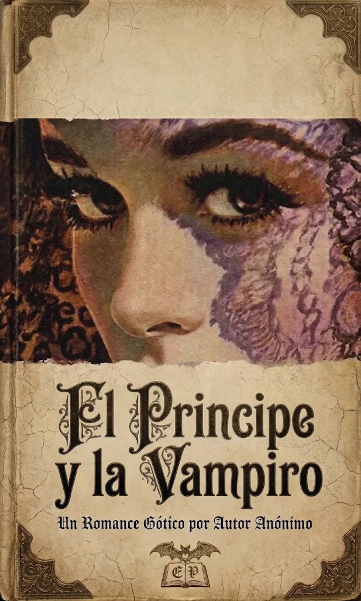
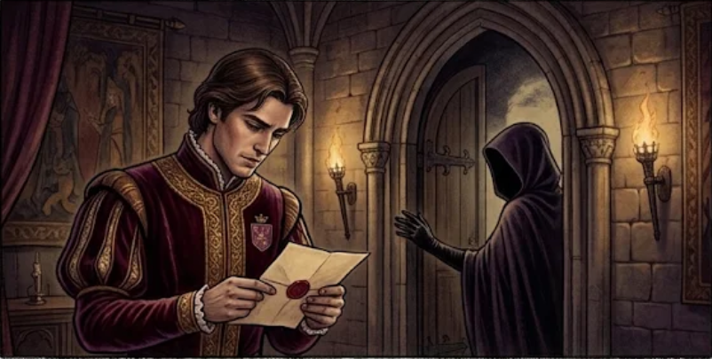
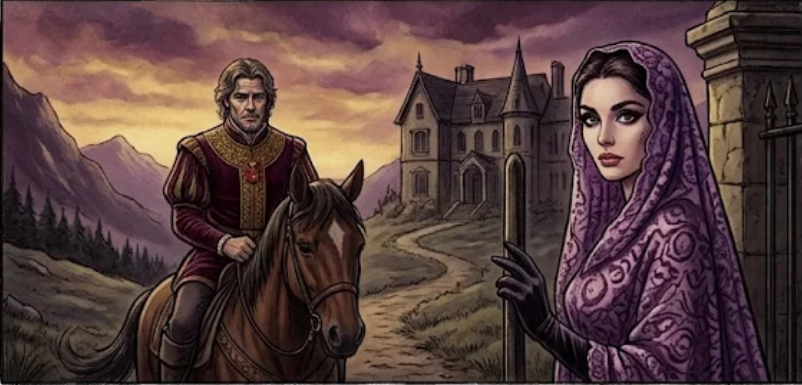
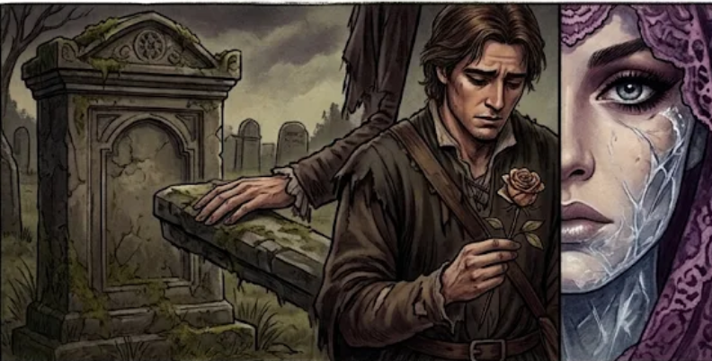

Las mil y una noches
Relato: El principe y la vampira

Ilustración de portada
Ficha del cuento
- Nombre original: Historia del principe y la vampira
- Nombre en español: Historia del pincipe y la vampira
- Autor: Anonimo (autor desconocido)
- Año: Desconocido
- Publicado en: Las mil y una noches
- Género: Narrativo, fantastico y de terror
- Tema: El engaño, la confianza, la astucia, el peligro y la proteccion ante las amenazas
- Idioma: Arabe
Escucha la reseña
Toda la información de esta página, narrada en audio.
Personajes principales
El príncipe
Es el hijo del rey y disfruta salir de cacería. Es valiente y compasivo, ya que decide ayudar a una joven que encuentra sola en el desierto.
La vampira
Es una criatura sobrenatural que aparenta ser una joven indefensa para engañar al príncipe y llevarlo hacia sus hijos con la intención de devorarlo.
El visir
Es el consejero del rey y acompaña al príncipe durante la cacería. Lo conduce a perseguir a una criatura peligrosa, provocando que se pierda en el desierto.
Resumen
La historia trata sobre un príncipe que sale de cacería acompañado por el visir de su padre. Durante el recorrido encuentran una criatura extraña y el visir anima al príncipe a perseguirla.
Al perderse en el desierto, el príncipe encuentra a una joven que asegura haberse separado de su caravana y decide ayudarla.
Sin embargo, descubre que la joven es en realidad una vampira que planea entregarlo a sus hijos para que se lo coman. El príncipe, al darse cuenta del peligro, pide ayuda a Dios y consigue que la vampira desaparezca.
Finalmente, logra regresar con su padre y le cuenta lo sucedido, revelando el mal consejo del visir.
3 enseñanzas del cuento
-
No debemos confiar en las apariencias.
No todas las personas que parecen indefensas tienen buenas intenciones; es importante ser precavidos.
-
Debemos pensar antes de actuar.
Tomar decisiones sin analizar los riesgos puede llevarnos a situaciones peligrosas.
-
La fe y la esperanza nos ayudan en momentos difíciles.
Mantener la calma y no perder la esperanza puede ayudarnos a enfrentar los problemas.
Ilustraciones de la obra

La invitacion misteriosa

Encuentro al crepusculo

El secreto revelado